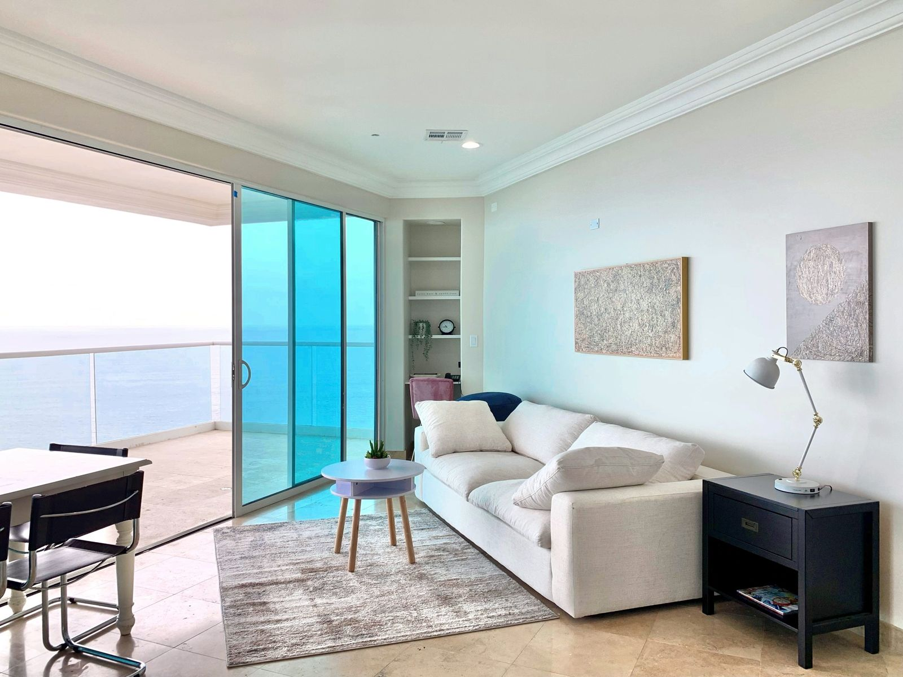

Las mejores vistas del edificio
Desde el piso 20, el mar y la costa de Rosarito llenan la sala, ambas recámaras y la terraza envolvente.

En venta · Playas de Rosarito, Baja California
$315,000 USD aprox. $155 por pie²
En lo alto del piso 20 de Las Olas Grand, esta residencia de esquina y muy privada tiene algunas de las mejores vistas del edificio y se abre casi por completo al mar. Puertas corredizas de cristal de piso a techo recorren la sala y ambas recámaras, y dan a una terraza envolvente de 703 pies² (65 m²) con barandal de cristal y vistas a lo largo de toda la costa de Rosarito.
Por dentro es luminosa y con acabados cuidados: pisos de travertino pulido, molduras, puerta de entrada en arco, muebles empotrados y clósets con espejo, cocina blanca con cubiertas de cuarzo y salpicadero de mármol, y baño principal con tina de hidromasaje, regadera de cristal y detalles de mosaico hechos a mano. Incluye un cajón de estacionamiento escriturado y acceso completo a las amenidades del edificio.
Desde el piso 20, el mar y la costa de Rosarito llenan la sala, ambas recámaras y la terraza envolvente.
El nivel 20 de los 21 de la torre, justo debajo del nivel penthouse: nada arriba bloquea la luz ni la vista.
Unidad de esquina sin vecino de un lado: esa pared es el límite del edificio, así que la residencia es tranquila y privada.
Las unidades en esta ubicación rara vez salen a la venta. Oportunidades como esta se van rápido.
Visitas privadas con cita. Pregunte por la unidad, el edificio o el proceso de compra en México.
AgentePerla Espinoza · PD Realty
Celular+52 661 195 1683
Correopdrealtyservice@gmail.com
Sitio webwww.pdrealty.com.mx